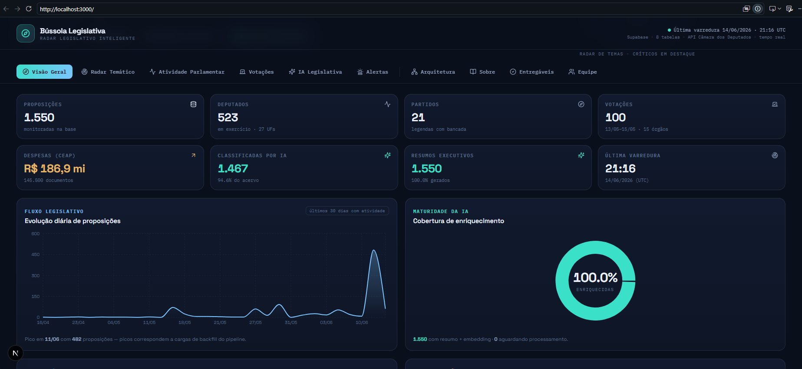

PÓS-TECH ENGENHARIA DE DADOS · XPERIUN · 2026
Pipeline ETL + IA para a Câmara dos Deputados
PROJETO INTEGRADOR
Cliente HTTP para a API da Câmara dos Deputados — retry exponencial, paginação automática, 5 endpoints. Dados salvos em JSON para reprocessamento.
Pandas para normalizar e limpar dados brutos. Modelo dimensional estrela no PostgreSQL via Supabase. Upsert idempotente — zero duplicatas.
Embeddings com pgvector, classificação temática e resumo executivo via GPT-4o-mini. Proposições parlamentares com contexto semântico.
Dados públicos da Câmara dos Deputados transformados em inteligência parlamentar — transparência como serviço.
SPRINT 1 · EXTRAÇÃO
Cliente HTTP com retry exponencial, paginação automática e persistência em JSON.
SPRINT 1 · EXTRACT
class CamaraAPIClient:
def __init__(self):
# config via .env
self.base_url = CAMARA_API_BASE_URL
self.timeout = 30
self.page_size = 100
def _get_paginated(self, path, params):
for attempt in range(3):
try:
r = requests.get(url, timeout=self.timeout)
r.raise_for_status()
return r.json()["dados"]
except HTTPError:
time.sleep(2 ** attempt) # exponencial
RETRY EXPONENCIAL
3 tentativas com backoff 1s → 2s → 4s. API pública com instabilidades ocasionais.
PAGINAÇÃO AUTOMÁTICA
100 itens/página, itera automaticamente até última página — transparente para quem chama.
PERSISTÊNCIA JSON
Dados brutos em data/raw/ com ensure_ascii=False. Acentos preservados.
5 endpoints: /deputados, /partidos, /proposicoes, /votacoes e despesas CEAP por deputado (arquivo separado, ~500 chamadas HTTP).
SPRINT 1 · ENDPOINTS
523 deputados federais. Nome, partido, UF, foto, contatos.
21 partidos com sigla, nome completo e membros do diretório.
PLs, PECs, MPVs. Ementa, autores, situação e data de apresentação.
Votações nominais com resultado, data e proposição relacionada.
~500 calls HTTP — uma por deputado. ~145k registros de gastos (pipeline isolado).
Cada fetch_*() retorna lista de dicts prontos para o Pandas — sem transformação prévia.
SPRINT 2 · TRANSFORMAÇÃO & CARGA
Pandas transforma, SQLAlchemy carrega. Upsert idempotente — execute quantas vezes quiser.
SPRINT 2 · PIPELINE E2E
2_run_pipeline.py — três camadas
Flag --incremental atualiza apenas registros novos — uso diário sem re-processar todo o histórico.
SPRINT 2 · MODELO DE DADOS
8 tabelas — dim_deputados é o hub; a ponte N:N resolve a autoria real (o /proposicoes não traz o autor).
SPRINT 2 · CARGA
from sqlalchemy.dialects.postgresql import insert
def upsert_dataframe(df, table, pk_cols, engine):
records = df.to_dict("records")
stmt = insert(table).values(records)
stmt = stmt.on_conflict_do_update(
index_elements=pk_cols,
set_={
c: stmt.excluded[c]
for c in df.columns
if c not in pk_cols
}
)
with engine.begin() as conn:
conn.execute(stmt)
CHAVES NATURAIS
fato_despesas: (cod_documento, parcela) — PK natural da CEAP, nunca duplica.
ATUALIZAÇÃO SELETIVA
Apenas campos não-PK são atualizados. Permite reprocessamento sem perda de enriquecimento IA.
BATCH OTIMIZADO
DataFrame inteiro em uma transação. PostgreSQL processa em batch, não linha por linha.
O pipeline pode ser executado diariamente — dados novos são inseridos, existentes atualizados, enriquecimento IA preservado.
SPRINT 3 · ENRIQUECIMENTO IA
Embeddings, classificação temática e resumo executivo com GPT-4o-mini.
SPRINT 3 · EMBEDDINGS
"Quais proposições falam sobre educação básica?" — busca semântica encontra mesmo sem as palavras exatas.
SPRINT 3 · IA GENERATIVA
CLASSIFICAÇÃO TEMÁTICA
GPT-4o-mini escolhe 1 dos 10 temas pré-definidos para cada proposição:
PROMPT ESTRUTURADO
RESUMO EXECUTIVO
Prompt versionado em ai/prompts/resumo_executivo.md. Saída estruturada em Markdown:
CUSTO CONTROLADO
GPT-4o-mini: ~$0.001/proposição. Hard cap configurado. Log de custos em docs/custo_ia.csv.
3_run_ai_enrichment.py --limite 100 — incremental, seguro para reexecutar.
PÓS V1 · EVOLUÇÃO
O /proposicoes não traz o autor. A ponte é populada por /proposicoes/{id}/autores — deputado, partido ou órgão, com ordem de assinatura e proponente.
Vínculo votação→proposição e o voto de cada deputado via /votacoes/{id}/votos. Habilita o "como cada partido votou" e o cruzamento tema × partido.
A CEAP (~145k linhas, ~500 chamadas HTTP) saiu do ciclo principal para um pipeline próprio, rodado por último — não trava proposições, votações nem IA.
Bridges idempotentes com flag --only-missing — processam só o que ainda falta; divergências vão para pipeline_erros.
STACK · TECNOLOGIAS
Type hints obrigatórios, f-strings, dataclasses. Venv isolado. UTF-8 em todos os arquivos.
Normalização de JSON aninhado, limpeza de strings, type casting. DataFrame → PostgreSQL.
Core (não ORM) para upsert via dialeto PostgreSQL. Transações atômicas batch.
Free tier para dev. pgvector extension habilitada. Connection string via DATABASE_URL.
GPT-4o-mini para classificação e resumo. text-embedding-3-small para embeddings. Hard cap configurado.
Extension PostgreSQL. Vetores 1536-d. Operador <=> para similaridade cosseno.
Todos os segredos via .env. DATABASE_URL, OPENAI_API_KEY, variáveis de configuração.
Painel Next.js 16 lê o Supabase ao vivo. n8n envia o e-mail semanal com o Top 5 da semana para a equipe.
Dependências instaladas com --only-binary :all: por compatibilidade com Python 3.14 no Windows.
RESULTADOS · NÚMEROS
Pipeline em produção no Supabase (projeto yipwbjexekvrqgnpvjfn). Dados ao vivo, disponíveis para consulta.
ENTREGA · DASHBOARD
Next.js 16 + Supabase. 9 seções, views agregadas, auto-refresh a cada 60s.

Heatmap tema × partido, autoria por deputado, "como cada partido votou" — todos alimentados pelas pontes do Pós V1.
Transparência não é
o fim — é o começo.
Dados públicos da Câmara dos Deputados estruturados, enriquecidos com IA e prontos para transformar como cidadãos entendem o Congresso.
Pós-Tech Engenharia de Dados · Xperiun · Projeto Bússola Pública · 2026